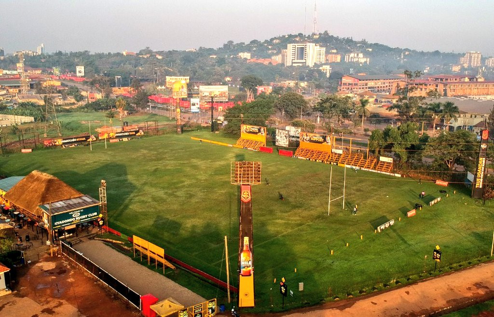
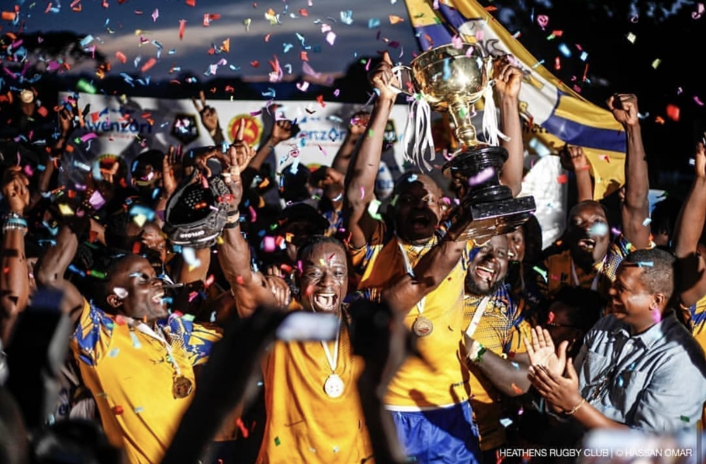

Kyadondo Rugby Club in Kampala,Uganda was built in 2000.It has facilities which include main ground,a training pitch,bar/restaurant and a club house.It is a porpular venue for rugby matches,concerts,social gatherings and also corporate events.It was started on the core values of rugby,intergrity,solidarity,love,unity and sportsmanship.Over the years, the club has produced talent that has roamed the land far and wide,with two mens club and the very first womens rugby club in Uganda.And now,looking to nurture the future of Uganda,turning every playing opportunity into o potential pathway to a Ntional dream.THIS IS KYADI.

Kyadondo Rugby Club has sponsors that fund the different clubs!!
History!!
Kyadondo club deals with alot of activities inorder to nurture talent and provide life life-changing opportunities to different kids in different schools.
It has been having an in partnership with Banunule Primary school were most of the students there got to love and be pasionate towards the game.
Kyadondo Rugby Club has a programme it follows inorder to create order amongst the teams on the pitch.
This Programme is followed depending on the club !!
| DAY | TEAM | TIME | FACILITY | COACH | MEDIC | TM |
|---|---|---|---|---|---|---|
| Monday | Thunderbirds | 4:00pm - 6:30pm | Gym Area | Coach Ben | Dr Agaba | TM Aaliyah | Tuesday | Heathens | 4:00pm - 7:00pm | Pitch | Coach Tolbert | Dr Grace | TM Allan |
| Wednesday | Buffaloes | 4:00pm - 6:00pm | Pitch | Coach Malcolm | Dr Grace | TM Rasul |
| Thursday | Bisons | 4:00pm - 6:00pm | Gym area | Coach Desire | Dr Grace | TM Rasul |
| Fridy | Stallions | 4:00pm - 6:00pm | Pitch | Coach Sky | Dr Lami | TM Okenyi |
Due to such training sessions ....Different clibs have been able to win different tournaments and matches over the years.Heathens has always merged to get so many trophies back home expanding Kyadondo as a club.This has enabled it to get so many sponsors that fund the club1!.We really appreciate all tha clubs.
